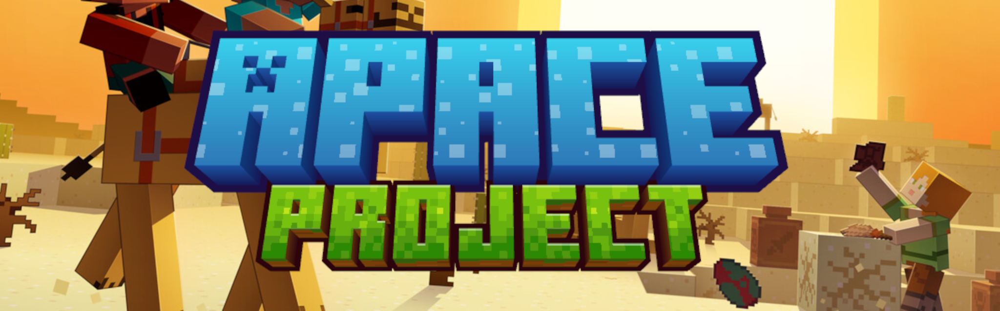
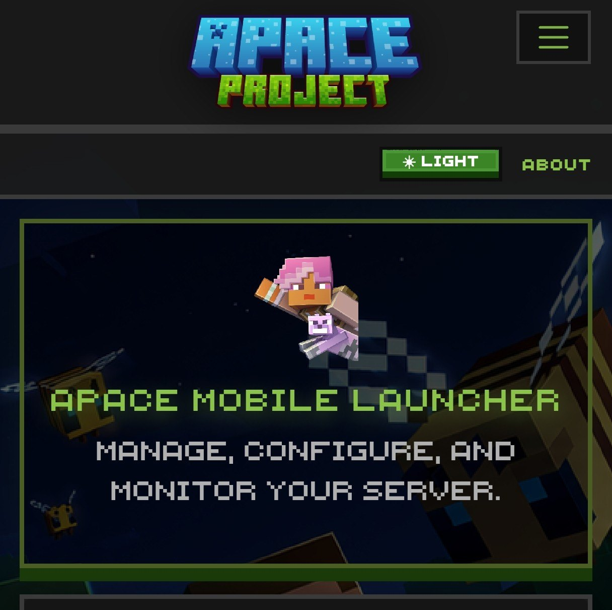

A server on your phone
The Apace Mobile Launcher runs the whole server on your Android phone. A PC or a Raspberry Pi works too — no cloud, no fees.

The easiest and fastest way to do it — the whole server runs on your phone with the mobile launcher.
A small server app that stands in for Mojang's old servers — so the Minecraft Earth™ app on your phone works again.
The Apace Mobile Launcher runs the whole server on your Android phone. A PC or a Raspberry Pi works too — no cloud, no fees.
Point it at your copy of Minecraft Earth and the app connects to your server — Android and iOS.
Players, cosmetics, backups — everything from one web panel.
Apace loads buildplates as on-demand dimensions on a persistent server — 3471% faster than booting a full server instance per buildplate.
Wait time reduced by 97.2% (5 s vs. 3 min full server/JVM boot). Measured on Raspberry Pi.
Feature status loads after the page renders. No JavaScript? Read the feature table on GitHub.
The easiest way in is the phone in your pocket. Prefer a PC or a board? One command.

One app downloads, runs and monitors the whole server on your phone — the web panel is built in. No PC, no Docker, no root, no Termux.
Real server processes run on the phone — 6 GB RAM or more recommended.
Same panel, same server — on a Linux machine, macOS or Windows.
curl -sSL https://raw.githubusercontent.com/ApaceProject/Apace/main/install.sh | bashiwr https://raw.githubusercontent.com/ApaceProject/Apace/main/install.ps1 | iexPatching needs your own legally obtained copy of Minecraft Earth™ (Android APK or iOS IPA). Where to get one and how the patch works: the repo's Installation.md.
You control everything from one dashboard. Real screens:


For the curious and the skeptical — what is actually running when you press Start.
An ASP.NET Core (.NET 10) web panel and API, with a Fabric mod
running inside a Minecraft Java server as the game backbone. Ships as
Docker images (ghcr.io/apaceproject/apace), deploys via
Docker Compose or the install script, and can update itself in place
from the panel. Ports: 5000 panel · 1808 API ·
19132/udp Bedrock join.
Rebuilds your own copy of Minecraft Earth™ 0.33.0: apktool
decode/rebuild, aapt2 + zipalign shipped in the
image, uber-apk-signer re-sign. Every server endpoint is rewritten —
locator, XAL/SISU sign-in, Xbox Live, PlayFab. On iOS the IPA is
re-packed and its binaries pseudo-signed with ldid so the
Xbox keychain entitlements survive a Sideloadly/SideStore re-sign.
An Android app that boots Ubuntu ARM64 under PRoot, adds OpenJDK 17
and the .NET 10 runtime, then runs the real server and shows the panel
in an immersive WebView. The Dev channel applies the full
ghcr.io image filesystem (layer-cached, so updates download
only what changed). targetSdk 28 is intentional — like
Termux, so PRoot may exec() from app storage.
GitHub Actions builds a multi-arch (amd64 + arm64) Docker image on
every push to dev, and the launcher APK on every push to the
launcher repo. Every change lands in public history — nothing ships
from a black box.
MIT-licensed, community-driven. Third-party components (PRoot, Ubuntu, .NET, OpenJDK) stay under their own licenses.